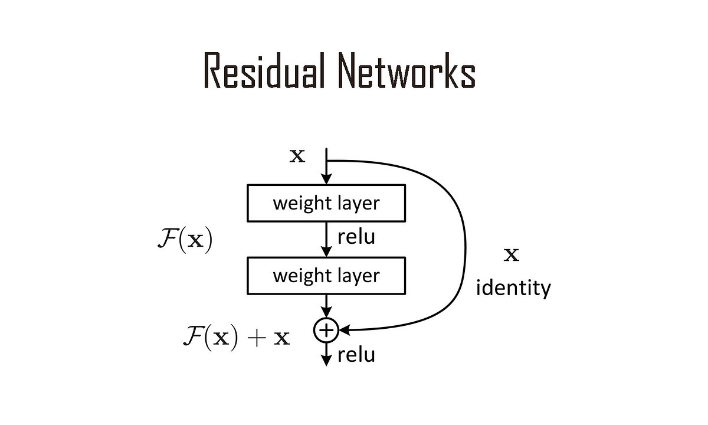

Residual Neural Network for Dubins Dynamics Vehicle
Jan 28, 2025 ・ 0 min read
Developed at TU Delft, this project focused on training a Residual Neural Network (ResNet) using PyTorch to learn the dynamics of the Dubins car, enabling efficient trajectory prediction.

Key Features:
By combining machine learning with kinematic modeling, this project demonstrates how ResNet can accurately predict the behavior of a Dubins car for trajectory planning applications.